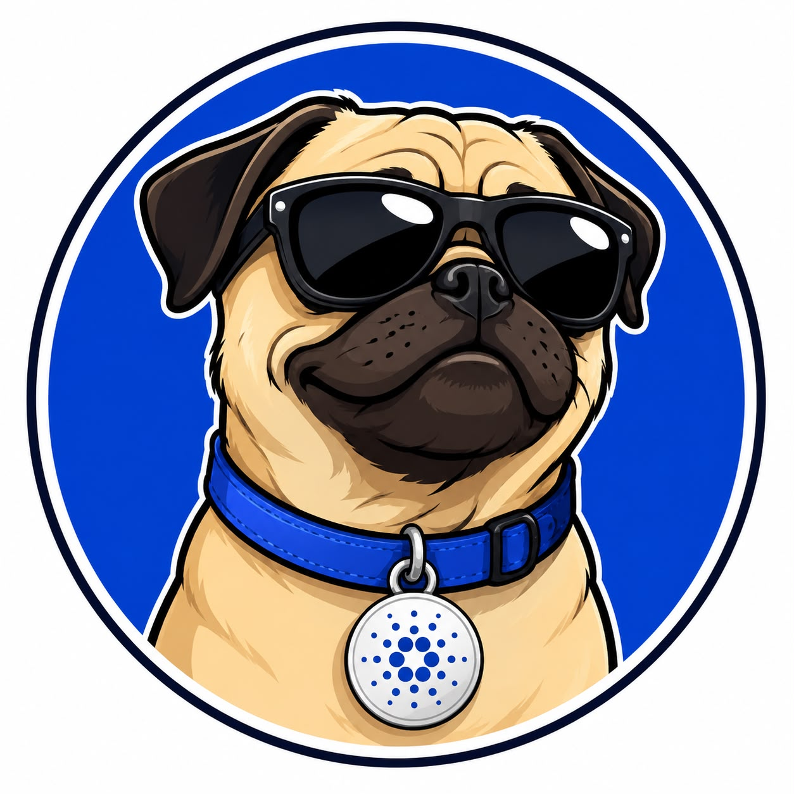

Der erste Cardano-Memecoin, der durch jeden Trade aktiv Pfoten rettet.
Die Krypto-Welt ist voll von Hunden, die nur für den Profit existieren. CharityDOG ($cDOG) macht Schluss damit. Unser Maskottchen – ein cooler Mops mit Cardano-Halsband und Sonnenbrille – jagt nicht dem schnellen Geld hinterher, sondern hat ein echtes Herz für Tiere.
Wir nutzen die Sicherheit der Cardano-Blockchain, um eine transparente Brücke zwischen der Krypto-Community und echtem Tierschutz zu bauen. Unser Ziel: Die Unterstützung von PETA Deutschland e.V. bei ihrer täglichen Arbeit.
Da PETA Deutschland aktuell keine direkten Cardano-Wallets anbietet, gehen wir den sichersten Weg für maximale Transparenz:
Angaben gemäß § 5 TMG:
Sascha Rosteck
CharityDOG Projektleitung
Am Barchembach 2a
46117 Oberhausen (Deutschland)
Kontakt:
E-Mail: sascha.rosteck@gmx.de
Register und Steuernummer:
Gewerbeanmeldung gem. § 14 GewO beim Ordnungsamt der Stadt Oberhausen.
Umsatzsteuer-Identifikationsnummer: Nicht vorhanden (Inanspruchnahme der Kleinunternehmerregelung gemäß § 19 UStG).
Wichtiger Hinweis für alle Nutzer:
CharityDOG ($cDOG) ist ein dezentraler Memecoin auf der Cardano-Blockchain, der zu Unterhaltungszwecken und zur Unterstützung von gemeinnützigen Tierschutzaktivitäten erschaffen wurde. $cDOG stellt ausdrücklich keine Aktie, kein Wertpapier, keine Vermögensanlage und kein Finanzinstrument dar.
Der Erwerb von Krypto-Token ist mit extrem hohen Risiken bis hin zum Totalverlust des eingesetzten Kapitals verbunden. Es gibt keine Garantien auf Kurssteigerungen, Gewinne oder eine zukünftige Liquidität. Die Projektleitung erbringt zu keinem Zeitpunkt eine Anlageberatung, Finanzberatung oder Kaufempfehlung.
Mit der Interaktion mit dieser Webseite, dem Smart Contract oder dem Token bestätigen Sie, dass Sie auf eigene Verantwortung handeln und die Projektleitung von jeglicher Haftung für finanzielle Verluste ausschließen.